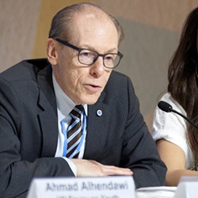
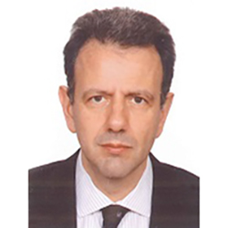
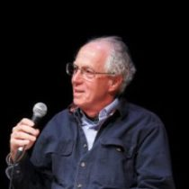

About FOGGS
Established in Brussels in 2013, the Foundation for Global Governance and Sustainability (FOGGS) was a think-and-do tank that blends research, dialogue, and advocacy for future-ready multilateralism.
Our origins and focus
FOGGS was a Public Benefit Foundation under Belgian law. It operated as a research and ideas-generation centre, discussion forum, and advocacy mechanism.
The founders were inspired by the UN Secretary-General's High-Level Panel on Global Sustainability (2010–2012), which helped introduce the concept of Sustainable Development Goals. The original aspiration was to continue that work, including the sensitive economic dimension. In 2018, FOGGS refocused on building a new "Grand Narrative" for globalisation.
Our mission
- Develop and promote a Grand Narrative of hope for a people-centred, planet-friendly, inclusive, and sustainable globalisation in a digital world.
- Help address major global challenges through a revamped global governance system and engaged, responsible, and informed global citizens.
- Ensure rapid and transformative technological and digital advances contribute to a more just and equitable world, improving life for all people.
Governance
The Executive Board provides strategic direction, supervises the Executive Director and Secretariat, and ensures delivery of the Foundation's objectives. Board members serve renewable 3-year terms in their individual capacity.
The Executive Director oversees day-to-day activities, represents the Foundation, and leads the Secretariat. The Advisory Board is composed of recognised figures from academia, public service, civil society, and the private sector, advising case-by-case without management responsibility.
Final Executive Board
FOGGS Executive Board members served 3-year renewable terms in their individual capacity.

Richard Kinley — President
Based in Bonn. Former UNFCCC Deputy Executive Secretary (2006–2017) with a career at the UN Climate Change Secretariat from its founding, leading support for the Kyoto Protocol and Paris Agreement negotiations. Earlier served the Government of Canada on international environmental policy. Holds BA in political studies and MA in international relations.
Yoriko Yasukawa — Vice-President
Based in San Jose, Costa Rica. Over 35 years advancing inclusive development, human rights, and peace. Former UNFPA Regional Director for Asia-Pacific; UN Resident Coordinator in Bolivia and Costa Rica; UNICEF Associate Director for Policy and Representative in Mexico and Ecuador. Facilitated constitutional negotiations in Bolivia and education and indigenous rights initiatives in Latin America.

Pyrros Papadimitriou — Co-Founder and Secretary
Athens–Brussels. Lawyer and economist with PhD in Economics (Kent). Associate professor of international economics at the University of Peloponnese. Founded Headway Economic Consultants and co-founded Four Assist Development Consulting. Led major Greek privatisation projects, including Olympic Airlines and regional airports.
Dominikos K. Chrysidis — Treasurer
Brussels-based international cooperation professional. Long experience in EU development policy, technical assistance design, capacity building, and public diplomacy. Coordinated multi-country monitoring and evaluation programmes and climate diplomacy assessments. Former FOGGS Policy and Advocacy Advisor and Managing Editor of Katoikos.world.
Veerle Vandeweerd — Member
Brussels–Nairobi. Over 25 years shaping global, national, and local environmental policy, including 20 years in the UN system. Former UNDP Environment and Energy Director and UNEP leader who launched the Global Environment Outlook. Co-founder of the Global Sustainable Technology and Innovation Conference series; now develops financial mechanisms for sustainable asset classes. PhD in Biochemistry (University of Antwerp).
Harris Gleckman — Member
Based in Maine, USA. Former Chief of the New York Office of UNCTAD, Senior Officer for the first UN Financing for Development Conference, and Chief of the Environmental Unit of the UN Centre on Transnational Corporations. Three decades of research on multinational corporations, global environmental governance, and climate economics. PhD in Sociology (Brandeis University).
Cilene Victor — Member
São Paulo-based professor of journalism and communication. Leads research on humanitarian journalism, climate change communication, and disaster risk reduction. Former UNESCO consultant on alert systems for Brazil's science ministry; veteran reporter of UN environment and climate conferences since 1992. Doctor in Public Health (University of São Paulo) and postdoctoral researcher in environmental and urban risk management.
Georgios Kostakos — Co-Founder and Executive Director
Sparta, Greece. Nearly 30 years in international affairs, including 14 with the United Nations: elections in South Africa (1994), human rights in Haiti, UNGA committee roles, UN strategic planning in the SG's office, first high-level UN climate event (2007), system-wide climate coordination, groundwork for the Sustainable Development Goals (2010–2012), and support to the Paris Agreement (COP21). Former EU LIFE climate projects coordinator at NEEMO EEIG; holds MA and PhD in International Relations and an engineering degree.
Inaugral Board and Co-Founders
- Janos Pasztor — Founder and first President; senior UN climate and sustainability official, Geneva—New York.
- Pyrros Papadimitriou — Co-Founder; legal and governance scholar, Athens—Brussels.
- Georgios Kostakos — Co-Founder; Executive Director and multilateral affairs expert, Sparta, Greece.
Janos Pasztor
Founder and first President of FOGGS. Former Acting Executive Director for Conservation at WWF International; previously Director for Policy and Science. Served as Executive Secretary of the UN Secretary-General's High-level Panel on Global Sustainability (2010–2012) and led the UN Secretary-General's Climate Change Support Team from 2008. Hungarian and Swiss national with BS and MS from MIT; more than 25 years in UN and NGO roles on energy, environment, and climate.
Pyrros Papadimitriou
Co-Founder and Secretary of the Executive Board. Lawyer and economist with degrees from the University of Athens, Sussex, and Kent (PhD Economics). Associate professor of international economics at the University of Peloponnese. Founded Headway Economic Consultants and co-founded Four Assist Development Consulting; has led major privatisation projects including Olympic Airlines and Greek regional airports.
Georgios Kostakos
Co-Founder and Executive Director with nearly three decades in international affairs. Spent 14 years with the United Nations: from observing South Africa's 1994 elections and advancing human rights in Haiti, to UNGA committee roles, strategic planning in the UN Secretary-General's office, organizing the first high-level UN climate event (2007), advancing system-wide climate action, and laying groundwork for the Sustainable Development Goals (2010–2012). Supported the Paris Agreement negotiations (COP21) and later coordinated EU LIFE climate projects at NEEMO EEIG. Holds MA and PhD in International Relations (Kent) and an engineering degree (NTUA), and has taught global governance in Brussels and Athens.
Secretariat
Georgios Kostakos
Executive Director
|
Veerle Vandeweerd
Co-Convener, COVIDEA Co-lead, Democrat Project
|
Cilene Victor
Co-Convener, GSPN Senior Advisor, GRC Project
|

Harris Gleckman
Co-Founder and Senior Advisor, GRC Project
|
Ioanna Sakketa
Strategic Development & Partnerships Advisor
|
Manan Shah
Operations Lead
|
Fotini Zarogianni
Katoikos Managing Editor
|
Jason Kyriakos
Communications Specialist
|
|
External Secretariat Fellows
Ivona Malbasic
Senior Fellow
|
Yvonne Rademacher
Senior Fellow
|
Thomas Slätis
Senior Fellow
|
Paola Bettelli
Senior Fellow
|
Péter Kakucska
Senior Fellow
|
|
|
|
|
|
|
|
|
|
|
|
|
|
Xiaoxiao Cao
Associate Fellow
|
Norah Zhang
Associate Fellow
|
Iris Kyriazi
Associate Fellow
|
Keith Miller
Associate Fellow
|
|
|
Vanina Morrison
Associate Fellow
|
Eleonora L. Cammarano
Associate Fellow
|
Branson Gillispie
Associate Fellow
|
|
|
Pratul Malthumkar
Summer Intern
|
Antoine Brimbal
Associate Fellow
|
|